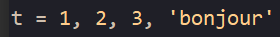
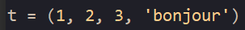
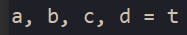

Un n-uplet (type tuple) est un ensemble d’éléments ordonnés, mais qu’on ne peut pas modifier.
On y accède comme pour les tableaux par l’intermédiaire d’un indice.
Si on esssaie de modifier une des vaeurs, cela provoque une erreur.
Pour construire un n-uplet, on utilise la syntaxe suivante :
ou
Les parenthèses deviennent obligatoires si un des éléments du n-uplet est lui-même un n-uplet.
On peut affecter à différentes variables les éléments d’un n-uplet de la façon suivante :
Un des intérêts des tuples est qu’ils permettent à une fonction (qui ne renvoie qu’une seule valeur à l’aide du return) de renvoyer un n-uplet (et donc plusieurs éléments que l’on pourra ensuite récupérer de la façon précédente.
Un autre intérêt est de pouvoir échanger les valeurs de deux variables en écrivant simplement :
Créer un n-uplets, puis demander sa taille, chercher à accéder à son deuxième élément, tester si un élément lui appartient, et faire afficher tous ses éléments.
Créer une fonction qui renvoie le minimum et le maximum d’un tableau.
Appliquer là à un tableau particulier pour en récupérer les extrema et les afficher.